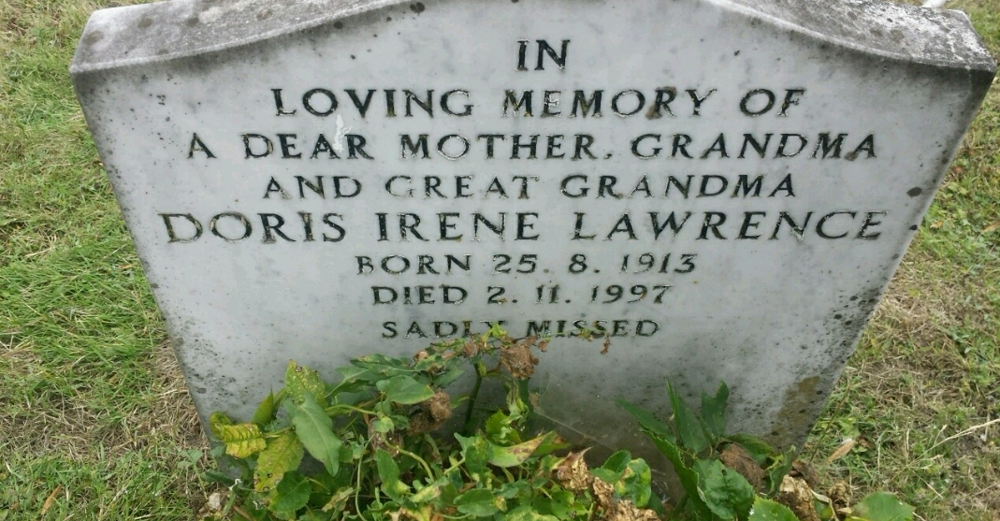
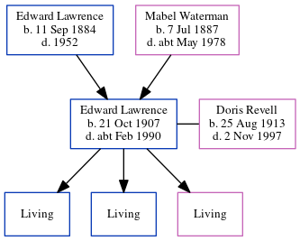

Doris Irene Lawrence (née Revell) 1913 - 1997
[ Home ] | [ Calendar ] | [ Surnames Index ] | [ Errors ] | [ Family History ]Doris Revell, the wife of Edward Douglas Lawrence (the first cousin once-removed on the mother's side of Nigel Horne), was born in Thanet, Kent, England on 25 Aug 19131,2,3,4 and. She married Edward (with whom she had 3 surviving children Leonard D, Raymond T and Sylvia G) in Thanet around Aug 19345. On 29 Sept 1939, she was living at St James Avenue, Ramsgate, Kent, England1.
She died on 2 Nov 1997 in Thanet3,4 and was buried on Minster Cemetery, Tothill Street, Minster in Thanet after 2 Nov 1997.
Citations
- 1939 Register - Findmypast (was recorded at this address)
- England & Wales births 1837-2006 - Findmypast
- England & Wales deaths 1837-2007 - Findmypast
- England Billion Graves cemetery index - Findmypast
- England & Wales Marriages 1837-2005 - Findmypast
Media
Doris Irene Revall - headstone

England & Wales deaths 1837-2007 - BMD/D/1997/11/82043041
England Billion Graves cemetery index - US/BMD/BILLION/5/000028459926
England & Wales births 1837-2006 - BMD/B/1913/3/AZ/001142/103
England & Wales marriages 1837-2005 - BMD/M/1934/3/AZ/001300/092
1939 Register Image - TNA-R39-1765-1765A-018
1939 Register - TNA-R39-1765-1765A-018-01
Family Tree
Map
Generated by ged2site. Last updated on Jul 3, 2024
Known Issues
Burial place (Minster, Thanet, Kent, England) has no citations
Listed in the residence for 29 Sep 1939, but spouse Edward Lawrence is not
No records of living with anyone
Adding date of burial as 'aft 2 Nov 1997'